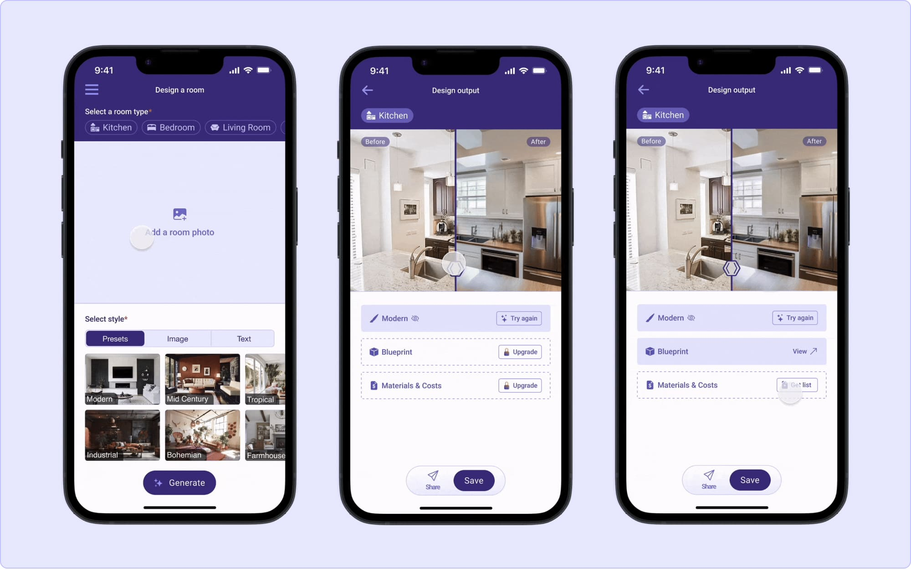
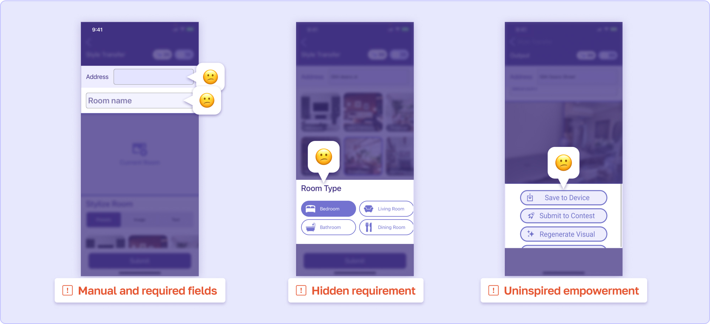
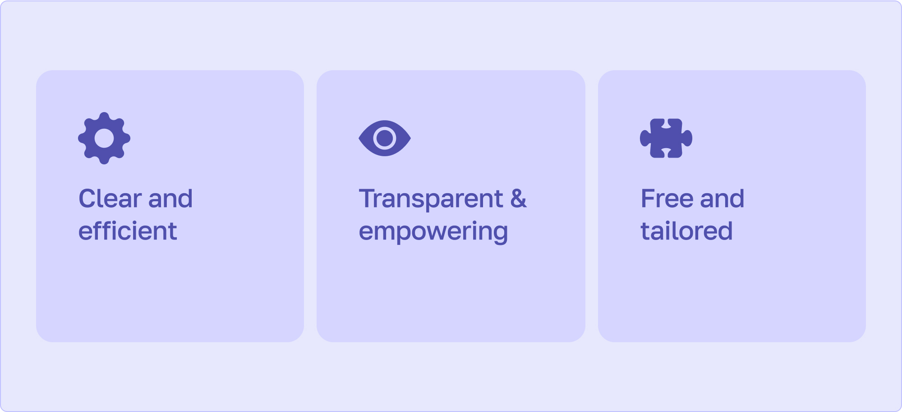

I improved Plutos Room Designer flow and designed new features to expand the experience. As the lead designer, I worked with the CEO, CTO, 2 engineers over 3 months through an iterative process.

Launching an iOS mobile app on the apple store
I joined the team right when they were launching the iOS mobile app on the apple store. I was responsible for enhancing the app's overall experience and designing features from scratch.
Identifying the targeted users
Through research, we’re aware the home renovation is a pain to homeowners. And at first that’s who we wanted to focus on initially but we quickly decided to focus on the Contractors.
As a team, we identified Contractors as our primary users and Homeowners as our secondary users.
Auditing the app to understand early decisions
To understand early decisions I asked the team and audited the app. In the app, I spotted inconsistencies and friction points in the MVP flow and in those areas, I noted what we can improve.

Defining the problem
From auditing the app, I pointed out several problems:
- Manual and required fields, hidden requirement, uninspired empowerment, inaccessible feature, and an unbuilt feature
Defining the success
We want the users to seamlessly navigate through the flow and doing so we hypothesize these outcomes would follow:
- Increase in revenue
- Increase in user engagement
Coming up with the hypothesis
If we address friction points, build out materials & costs, clarify actions, and enhance transparency, we can increase revenue and user engagement.
We’ll craft an app renovation experience that is...
Early research helped the founders gain a clear vision of how they wanted to market their brand and product. I distilled the insights into three guiding principles to shape my designs.

The latest design version was implemented in Q4 of 2024. The outcome included:
- Improved efficiency through a streamlined flow.
- We heard directly from an user who used the Plutos app to secured 2-3 remodeling projects, tripling their income.
My Learnings and future improvments
MVP impact – This project me helped me reinforce the fact that even a MVP can create significant value for our users. Early adoption doesn't require every feature—just the right ones to drive meaningful transformation.
Collaboration challenges – I worked with offshore engineers which usually means adjusting the way I communicate. At first, when I relied on verbal or written instructions, it led to gaps, while sharing prototypes bridged understanding effectively.
Over-communication is key – When there was silence after handoff, I thought that generally means alignment. But, after reviewing implementations, it wasn't always the case. So, I generally follow-up to know how things were going.